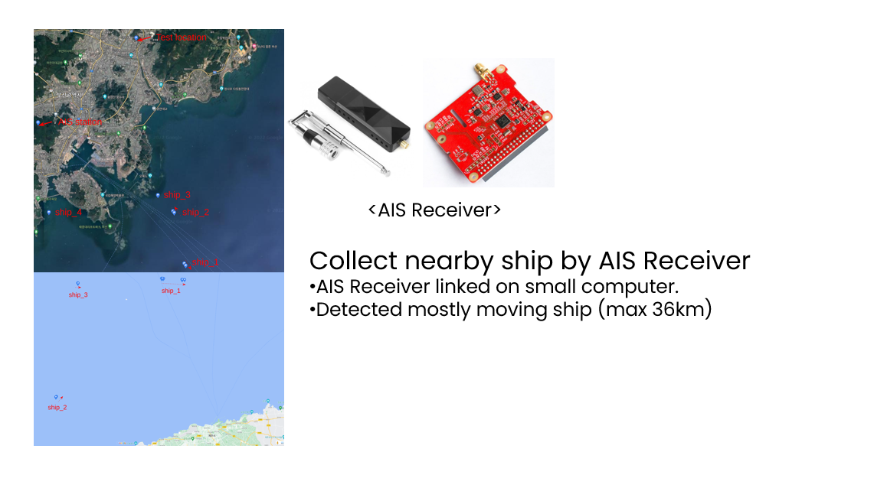
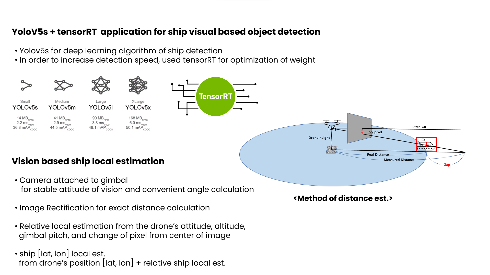
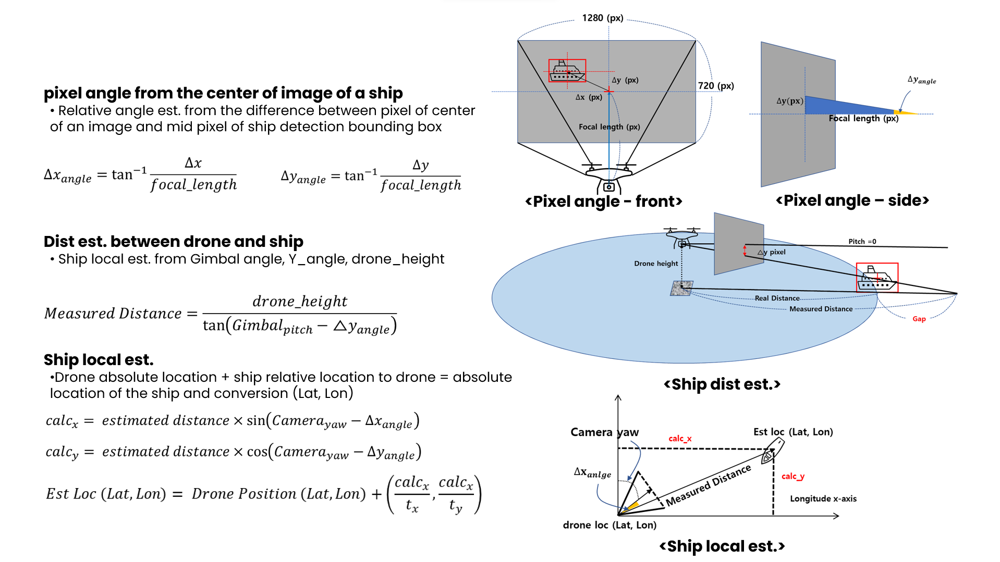

// Project Detail — Pablo Air Co., Ltd. · Jun 2022 – Jun 2023
Maritime Autonomous
Delivery System
End-to-end autonomous drone delivery for open-water maritime environments — ship detection, vision-based ship geolocation, and precision landing on moving platforms.
// 01 · System Overview
Full-Mission Simulation
The simulation demonstrates the complete delivery mission pipeline: autonomous takeoff, maritime route navigation, real-time ship detection, approach, and payload delivery. The system maintains situational awareness over open water by cross-checking AIS vessel data with vision-based ship position estimates.
Full mission simulation — autonomous maritime delivery drone from takeoff to ship landing.
// 02 · Tech Point 1
Ship Detection — YOLO + CSRT Tracker
A YOLO-based object detector was deployed on-board to identify target ships in real time from aerial footage. Once detected, a CSRT (Channel and Spatial Reliability Tracker) maintained target lock across frames even during occlusion and rapid camera motion, enabling stable approach trajectories to a moving vessel.

YOLO detection + CSRT tracking result — real-time bounding box on target ship from aerial view.
// 03 · Tech Point 2
Vision-Based Ship Geolocation with AIS Cross-Check
Ships broadcast their GPS positions over AIS, but relying on a single source is risky for autonomous navigation. A vision-based ship geolocation pipeline was developed: from the gimbal camera's attitude and the pixel angle of each ship's bounding box, the drone-to-ship relative distance and the ship's absolute position (Lat/Lon) are estimated geometrically. Vision estimates are cross-checked against AIS-reported positions — matched ships update the AIS tracks, while unmatched ships are registered as new obstacles for path planning.
Ship geolocation in action — vision-based position estimates cross-checked against AIS-reported GPS positions during navigation.

YOLOv5 ship detection and vision-based ship position estimation method.

Geolocation geometry — pixel angle → relative distance → absolute ship position (Lat/Lon).
// 04 · Tech Point 3
Real-Time Path Planning from Ship Positions
Ship positions maintained through vision and AIS cross-checking feed directly into a real-time RRT-based path planner. The planner periodically regenerates collision-free routes to the target ship, treating surrounding vessels as obstacles — so the localization result immediately drives the navigation decision.
Real-time RRT path planning — routes regenerated from detected ship positions during the mission.
// 05 · Tech Point 4
Precision Landing on a Moving Ship
The final stage of the delivery mission requires landing on a ship deck that is continuously moving, pitching, and rolling. A visual marker (ArUco / custom pattern) placed on the landing pad is detected via YOLO, and its 6-DOF pose is recovered using PnP (Perspective-n-Point) to compute precise landing commands in real time.
Drone-view landing sequence — visual marker detection guiding descent onto the moving deck. See the Precision Landing project page for full details.